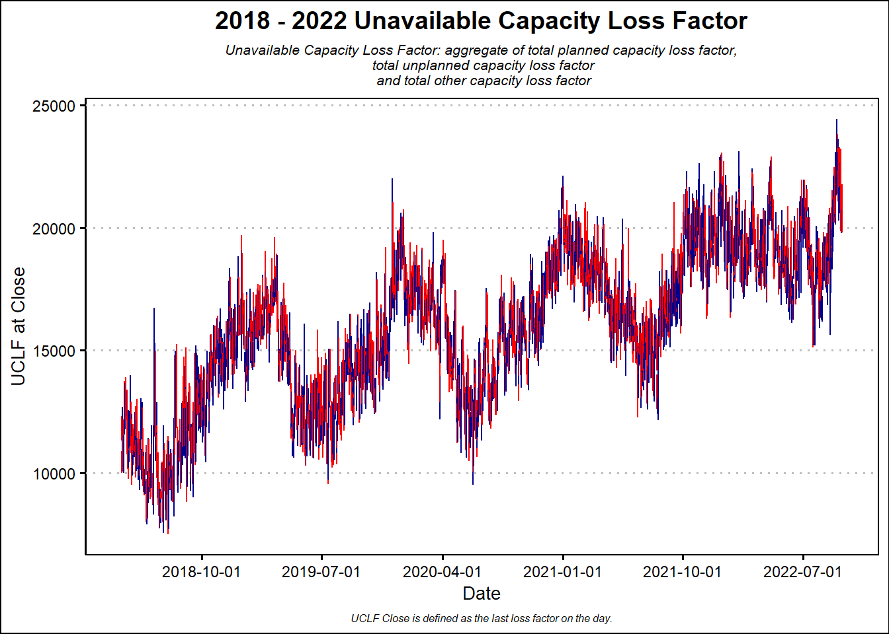
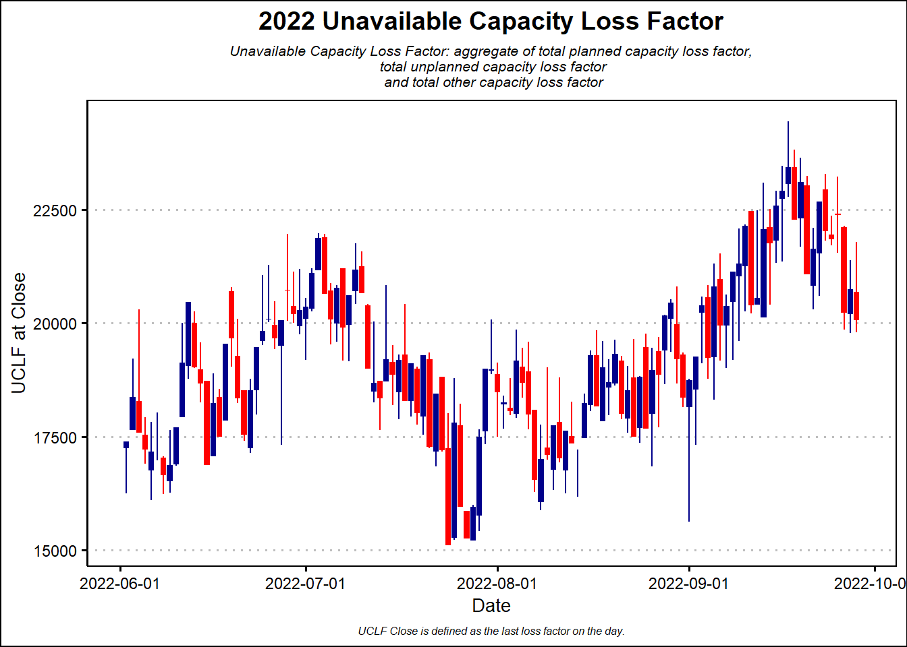

2022 Eskom Unavailabe Capacity
INTRODUCTION
In late 2007, Eskom- South Africa’s electricity public utility, announced a rolling Blackout programme to mitigate the risk of a national electricity grid collapse. Fifteen years later, the programme, euphemistically named ‘loadshedding’, persists. The energy provider has failed to provide a sufficient supply of energy to meet demand in their domestic markets. In fact, according to Bloomberg (n.d.) the energy crisis has worsened, 2022 has already had 100 days of rolling Blackouts.
Of course, there are a plethora of reasons that explain the crisis including, corruption, political interference, political inaction, poor corporate governance, financial mismanagement and many others (see Grootes (2019) ). With the aforementioned context in mind, it worth exploring some data to form a more comprehensive understanding of the status of energy supply in the country.
ESKOM Data Portal
Fortunately, the state-owned institution has a data portal replete with a data dictionary, data visualisation and data exporting functionality. Additionally, obtaining the bulk data export is take a few seconds. Ultimately, a person can access data from Eskom for the previous five years.
The first task of analysing the dataset is to understand it’s structure. In the Eskom bulk data contains several dimensions including energy generation, energy generation sources, energy demand and energy supply and importantly Capacity Loss data. Capacity Loss is measured by numerous variables depending on the type of loss. Below, the Eskom Data Portal provides an glossary of variable definitions. This analysis will focus on Capacity Loss Factor which is a measure of unavailable energy capacity.
- Total Planned Capability Loss Factor: the ratio between the unavailable energy of the units that are out on planned maintenance over a period compared to the total net installed capacity of all units over the same period.
- Total Unplanned Capability Loss Factor: the ratio between the unavailable energy of the units that are out on unplanned outages over a period compared to the total installed capacity of all units over the same period.
- Total Other Capability Loss Factor: the ratio between the unavailable energy of the units that cannot be dispatched, due to constraints out of the power station management control, over a period over a period compared to the total net install capacity of all units over the same period.
Based on the variable definitions above, we can observe a number of important aspects. First, the Capacity Loss Factor, is differentiated between planned and unplanned, failures to power station management control compared to the total net install capacity of all units. In essence is each variable, is a ratio between available and unavailable capacity. It is also important to highlight the date_time_hour_beginning variable, an hourly update of capacity availability.
CANDLES
Visualising a large time-series dataset is challenging. Fortunately, the world of finance has solved this problem. Candlestick charts are popular financial charts which provide a succinct view of daily share price movement. They provide a daily distribution of share price activity, i.e, candle charts are modified small box plots. As usual, Wickham (2022) ’s set of packages have all the tools required to clean data and visualise the data. In this case, Dancho and Vaughan (2022) ’s tidyquant package offers geom_candlestick function which coupled with ggplot2 can help render candlestick charts. Prior to plotting the visualisation, we create a data.frame with all required columns, namely, Unavailable Capacity Loss Factor at Open, Low and High.
In the code chunk below, we create function which takes a function, finds all the unique date in the dataset along with the variables required to plot the candlestick chart. The function returns a data.frame. The candle_data function is applied to the list of unique dates through lapply and do.call to finalise the dataset.
THESE CANDLESTICKS DON’T REQUIRE LOADSHEDDING

There are many complicated ways to analyse candlestick charts, that is a discussion for another day. For now, we are interested in tracking the general direction of the Unavailable Capacity Loss Factor. In short, the capacity unavailability has been increasing from 2018 to 2022. Throughout the period, there are new highs in unavailability indicating a worsening situation. If we zoom into 2022, the trend continues, confirming the depths of South Africa’s energy crisis.

CONCLUSION
In this post, we visualised data Capacity Loss Factor data from Eskom. The goal was visualisation, a more detailed analysis would employ time series analysis approaches such as Wavelet, Long-Term Memory Processes and myriad of other modelling approaches. Woodward Wayne, Gary, Henry, and Elliot, Allan (n.d.) provide a detailed treatment of applied time series analysis in R. Fortunately, the energy crisis at Eskom is sufficiently glaring as to require no sophisticated analysis.